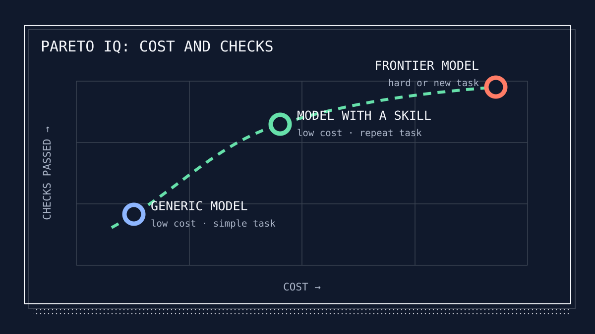

For months, I used expensive models for jobs that did not need them. I built Spewer so I could stay in Codex and send simpler jobs to Luna or Qwen3.
I like working in Codex and Claude Code. Their interfaces, tools, and subscriptions fit how I work. OpenCode and Pi make it easy to choose a model. I did not want to move to another harness just to use a cheaper model.
My usual setup is Codex with GPT-5.6 Sol at high or xhigh reasoning. I want Sol for architecture, unfamiliar code, and hard bugs. I do not need it to scan a repository, summarize files, or list tests.
When everything starts in the same chat, it is easy to use Sol for everything. I wanted Codex to hand off the simpler jobs and bring the answers back.
Luna was good enough for simpler jobs
Luna gave me a practical alternative. It was fast and cheap enough for small jobs, so I started an internal project named delegate.
The first version did one thing. I kept the hard problem in Codex, sent a smaller job to Luna, and returned its answer to Codex.
I soon needed more than a model switch. The job had to survive a restart, show what it was doing, stay within its permissions, and return a result I could check.
Calvin French-Owen gave it a better name
Then I read Calvin French-Owen’s “Small Models Have Arrived.” He described “IQ 180” work and “token spewer” work. That was exactly the difference I was trying to handle.
Some work needs the best model because it is new, unclear, or expensive to get wrong. A lot of work simply needs a cheaper model to follow clear instructions.
His words fit what I had built. I renamed delegate to Spewer, moved it out of my internal project, cleaned it up, and released it as open source.
I do not need the smartest model for every job. I need the cheapest model that can do that job well.
Small requests add up at work
I was also talking to serial entrepreneur Suresh Batchu. He said engineers were using models to ask for the time and weather.
One weather question costs almost nothing. Across a company, the same kind of request happens over and over. The tokens add up.
I think the terminal is becoming a harness interface. The shell still runs underneath, but an agent now chooses commands, models, and tools for us.
If every request goes to the smartest model, a company pays frontier prices for weather questions as well as architecture. The harness needs a cheaper path before the model starts.
Four rules kept Spewer simple
I used four rules so Spewer would not become another model picker or agent harness.
-
01
Stay in the harness you like
If you like Codex, Claude Code, or Kimi, keep using it. Saving money should not require a new interface.
-
02
Send only clear jobs
A job with a clear goal and checks can go to a cheaper model. A hard decision with a lot of context should stay.
-
03
Compare the same kind of work
There is no best model for every job. Compare models on the same task and use the cheapest one that passes.
-
04
Let the frontier model review it
The cheaper model returns its result and checks. The frontier model can accept it, fix it, or try again.
Spewer connects your harness to a cheaper worker
Spewer does not replace either side. It stores the job, starts the worker, tracks progress, and returns a receipt.

The Codex skill asks Spewer which capsules are ready. Each capsule reports its model, tools, network access, and installed skill.
Spewer copies the capsule settings into the new task. It records the task, finds an available worker, and calls Codex App Server or Ollama.
The worker can answer in the foreground or keep running in the background. Spewer restores accepted work after a restart and returns a receipt when the task ends.
The receipt records the model, tokens, tool calls, time, capsule version, skill, files, and checks. If a provider does not report a value, Spewer says so instead of recording zero.
Codex can run on both sides
Codex can use Sol on the left while Codex App Server runs Luna on the right. I stay in Codex, but the delegated job uses the cheaper model.
Spewer is more than a list of model providers. It runs the job outside the original turn and gives the result back to that turn.
It also works with open models. An Ollama capsule can run Qwen3 through the same task, status, and receipt commands.
You can add a skill to any capsule
A capsule starts as a general worker. Bind a SKILL.md and it reports that skill without restarting Spewer.
The frontier sees the change the next time it checks capabilities. Spewer copies the skill into each task, so the receipt identifies the exact instructions used.
The expensive model can figure out a method once. A cheaper model can follow the saved instructions on later jobs.
Pareto IQ compares cost and results
I do not want one general score for a model. I want to know what a task cost and whether the result passed its checks.

Spewer calls this comparison Pareto IQ. Each point stores the model, cost, checks passed, checks attempted, and the prices used.
Two of two checks is not the same as two of ten. Spewer also keeps unlike jobs apart. A parser edit and an architecture review do not belong on the same chart.
Version 0.2 records receipts, prices, checks, and the data needed for this chart. It does not yet include a finished spewer pareto command.
I know Spewer moves some routine work away from Sol in my workflow. I do not yet have enough repeated runs to claim a savings percentage.
What I now send to each model
I keep Sol on hard work where its reasoning matters. I delegate jobs that have a clear goal, limited permissions, and checks.
Keep in Sol
- Architecture with ambiguous tradeoffs
- Exploration across unfamiliar systems
- Security-sensitive decisions
- Final review and user-facing judgment
Send to Luna or Qwen3
- Repository scans and inventories
- Summaries and first-pass research
- Test triage with explicit checks
- Repeat procedures with bound skills
A foreground job gives me the answer right away. A background job returns a task ID and gives me watch, check, respond, and cancel.
Sol keeps the full conversation and the hard decision. Luna or Qwen3 gets only the smaller job and returns its result.
The terminal is becoming a harness
I still use the shell, but I spend more time talking to Codex than typing commands. The harness now plans work, runs tools, asks questions, and resumes jobs.
This makes model choice part of the terminal stack. If a simple job can use a cheaper model, the harness should have a way to send it there.
That is what I want Spewer to do: keep me in Codex, send simple jobs elsewhere, and bring back enough information to check the work.
Spewer 0.2.0 · Apache-2.0
Install it without changing harnesses
Homebrew installs spewer and its short alias, spu. The setup command prepares Luna, the Codex delegation skill, and the detached service.
# Install the release
brew install modiqo/tap/spewer
# Prepare the default Luna worker
spewer install
# Prove the path
spewer ask "Return only the sum of 17 and 19."Notes and sources
- Calvin French-Owen, “Small Models Have Arrived,” August 26, 2026.
- How Spewer works separates implemented behavior from future adapters.
- Spewer observability defines receipts, cost provenance, and Pareto IQ comparisons.
- Spewer 0.2.0 ships native macOS and Linux builds for ARM64 and x86-64.